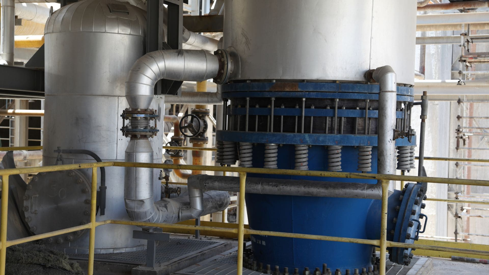
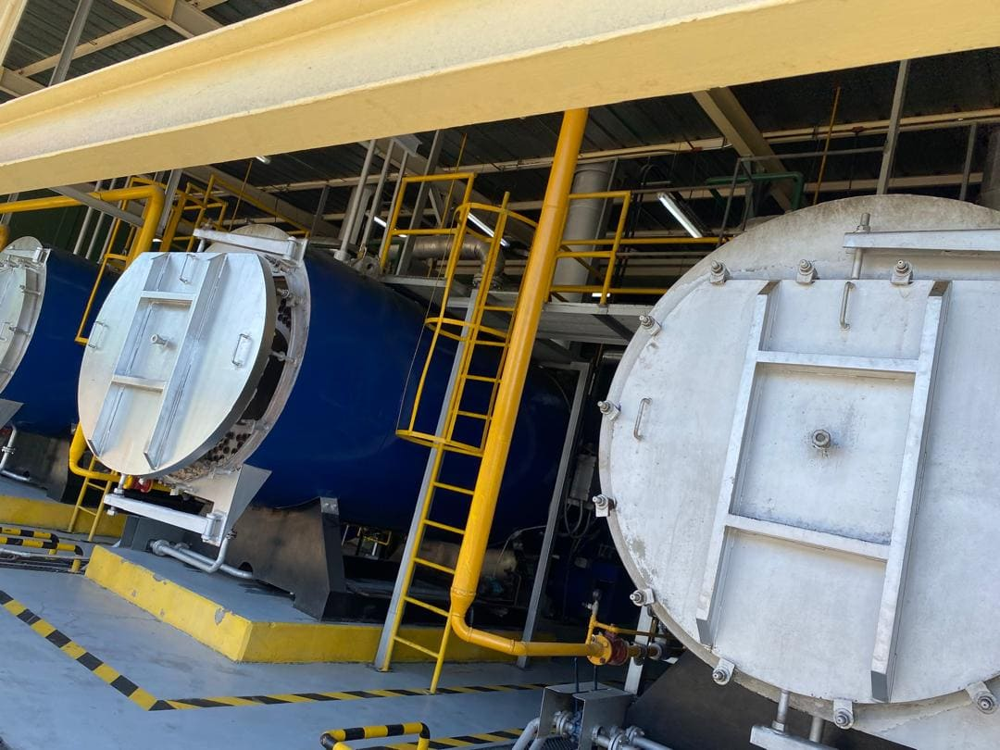
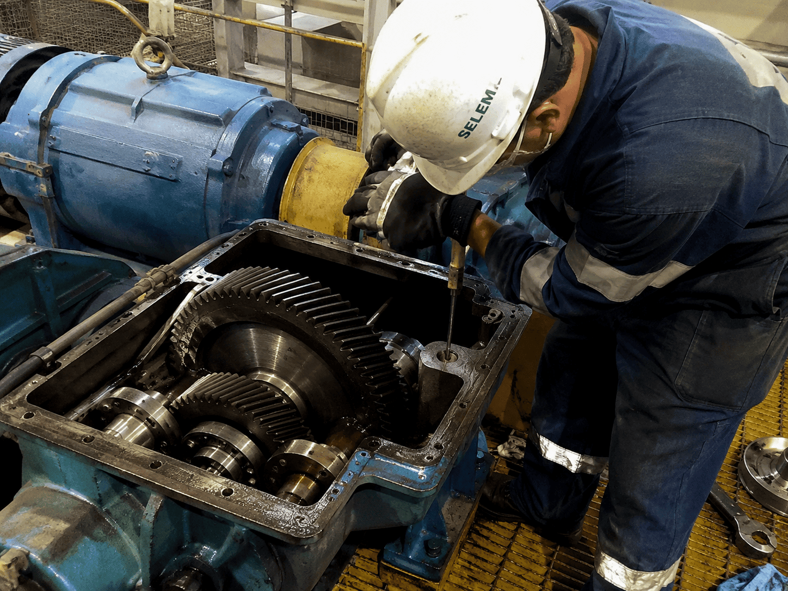

Mantenimiento Mecánico Industrial
En SELEIM ofrecemos servicios de mecánica industrial orientados al mantenimiento, reparación, instalación y ajuste de equipos utilizados en procesos productivos, sistemas auxiliares e infraestructura industrial.
Atendemos requerimientos asociados a bombas, válvulas, sistemas de tuberías, equipos rotativos, mecanismos de transmisión, estructuras metálicas y componentes mecánicos críticos para la operación de planta.
Intervención mecánica confiable
Ejecutamos trabajos de mantenimiento y reparación con enfoque técnico, reduciendo tiempos de parada y favoreciendo la disponibilidad de los equipos.
Servicios Especializados
- Mantenimiento preventivo y correctivo de equipos mecánicos.
- Instalación y reparación de bombas industriales.
- Instalación, ajuste y sustitución de válvulas.
- Mantenimiento de sistemas de tuberías industriales.
- Revisión de motores, reductores y sistemas de transmisión.
- Alineación básica y ajuste de equipos rotativos.
- Fabricación y reparación de estructuras metálicas menores.
- Soporte mecánico durante paradas de planta.

Equipos Mecánicos Industriales
Realizamos diagnóstico e intervención de componentes mecánicos utilizados en líneas de producción, servicios auxiliares y sistemas de transporte de fluidos, priorizando la confiabilidad y seguridad operativa.
Nuestro equipo puede apoyar actividades de desmontaje, inspección, ajuste, sustitución de componentes, montaje y pruebas funcionales según el requerimiento del cliente.

Paradas, Montajes y Adecuaciones
Brindamos soporte mecánico en actividades de mantenimiento programado, adecuaciones de planta, montajes industriales y corrección de fallas que puedan afectar la continuidad de los procesos.
Estas actividades pueden integrarse con nuestras áreas eléctrica, de instrumentación y proyectos para ofrecer soluciones completas en campo.

¿Por qué elegir SELEIM?
Soporte técnico integral
Atención mecánica complementada con experiencia eléctrica e instrumentación industrial.
Reducción de paradas
Intervenciones orientadas a restituir la operación y disminuir tiempos de indisponibilidad.
Trabajo en campo
Personal capacitado para ejecutar labores técnicas en entornos industriales.
Seguimiento técnico
Recomendaciones e informes para facilitar la gestión del mantenimiento.
Solicite una evaluación técnica
Nuestro equipo está preparado para asistirle en mantenimiento, reparación, montaje y soporte mecánico industrial.
Solicitar inspección